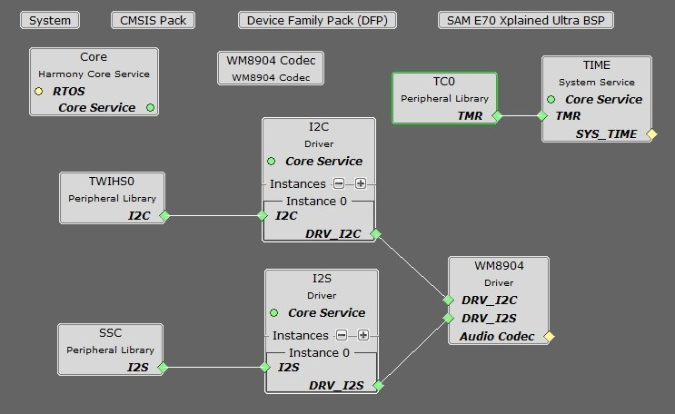
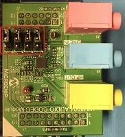

Tools Setup Differences
For projects using the SSC interface and the WM8904 as a Master (the WM8904 codec generates the I2S clocks):
When building a new application, start by creating a 32-bit MPLAB Harmony 3 project in MPLAB X IDE by selecting File > New Project. Chose the Configuration name the same based on the BSP used. Select the appropriate processor (ATSAME70Q21B).
In the MHC, under Available Components select the appropriate BSP (SAM E70 Xplained Ultra). Under Audio>Templates, double-click on WM8904 Codec. Answer Yes to all questions except for the one regarding FreeRTOS; answer No to that one.
You should end up with a project graph that looks like this, after rearranging the boxes:

Click on the WM8904 Driver. In the Configurations Options, set the desired Sample Rate if different from the default (48,000) under Sampling Rate.
If using the SAM E70 Xplained Ultra board, in the Clock Diagram, set MOSCEL to Main Crystal, check the Bypass checkbox, and uncheck the RC Crystal Oscillator and Main Crystal Oscillator boxes, to make use of the 12 MHz external oscillator:

In the Clock Diagram, in the PCK2 tab of the Programmable Clock Controller section, check the On checkbox, and set CSS to MAINCLK (12 MHz). Then check the SSC checkbox in the Peripheral Clock Controller section.
It is also possible to change the audio format from 16 to 32-bits, and from I2S to Left Justified (SSC only). These changes need to be done in the MHC in both the WM8904, and SSC/I2SC Peripherals. In the current application code (app.h), a #define is also set to the current width.
For projects using the I2SC interface and the WM8904 as a Slave (the SAM E70 generates the I2S clocks):
When building a new application, start by creating a 32-bit MPLAB Harmony 3 project in MPLAB X IDE by selecting File > New Project. Chose the Configuration name the based on the BSP. Select the appropriate processor (ATSAME70Q21B). Click Finish.
In the MHC, under Available Components select the BSP SAM E70 Xplained Ultra. Under Audio>Templates, double-click on
WM8904 Codec. Answer Yes to all questions. Click on the WM8904 Codec component (not the WM8904 Driver). In the Configuration Options, under WM8904 Interface, select I2SC instead of SSC. Answer Yes to all questions except for the one regarding FreeRTOS; answer No to that one.
You should end up with a project graph that looks like this, after rearranging the boxes:

Click on the WM8904 Driver. In the Configurations Options, under Usage Mode, change Master to Slave. Set the desired Sample Rate if different from the default (48,000) under Sampling Rate.
If using the SAM E70 Xplained Ultra board, in the Clock Diagram, set MOSCEL to Main Crystal, check the Bypass checkbox, and uncheck the RC Crystal Oscillator and Main Crystal Oscillator boxes, to make use of the 12 MHz external oscillator:
Also in the Clock Diagram, in the PCK2 tab of the Programmable Clock Controller section, check the On checkbox, and set CSS to MAINCLK (12 MHz).
The following tables show suggested settings for various sample rates in the Clock Diagram when using the I2SC Peripheral in Master mode. Make sure PLLA Clock checkbox is checked, and fill in the values for the PLLA Multiplier and Divider boxes. Select the I2S1 tab under Generic Clock Controller, set GCLKCSS to PLLACK, fill in the Divider value as shown, and check the checkbox next to it.

The values in the first table give the lowest error rate, but have varying PLLACK values so it is best to use the UPPCLKDIV selection for CSS under Master Clock Controller, for a Processor Clock of 240 MHz.
| Desired Sample Rate | PLLA Multipler | PLLA Divider | PLLACK | I2SC Generic Clock Divider | Calculated Sample Rate | Error |
|---|---|---|---|---|---|---|
| 8000 | 2 | 43 | 258 MHz | 126 | 7998 | -0.025% |
| 16000 | 2 | 43 | 258 MHz | 63 | 15997 | -0.0187% |
| 44100 | 1 | 16 | 192 MHz | 17 | 41117 | 0.0385% |
| 48000 | 2 | 43 | 258 MHz | 21 | 47991 | -0.0187% |
| 96000 | 3 | 43 | 172 MHz | 7 | 95982 | -0.0187% |
The values in the second table have somewhat higher error rates, but use a PLLACK value of 294 MHz which is suitable to be used as a Processor Clock (using the PLLACK selection for CSS) which is closer to the maximum of 300 MHz.
| Desired Sample Rate | PLLA Multipler | PLLA Divider | PLLACK | I2SC Generic Clock Divider | Calculated Sample Rate | Error |
|---|---|---|---|---|---|---|
| 8000 | 2 | 49 | 294 MHz | 144 | 7975 | -0.3125% |
| 16000 | 2 | 49 | 294 MHz | 72 | 15950 | -0.3125% |
| 44100 | 2 | 49 | 294 MHz | 26 | 41170 | 0.1587% |
| 48000 | 2 | 49 | 294 MHz | 24 | 47851 | -0.3104% |
| 96000 | 3 | 49 | 294 MHz | 12 | 95703 | -0.3094% |
It is also possible to change the audio format from 16 to 32-bits. This changes need to be done in the MHC in both the WM8904 Driver and SSC Peripheral. In the current application code (app.h), a #define is also set to the current width.
Bulding the Application
This section identifies the MPLAB X IDE project name and location and lists and describes the available configurations for the demonstration.
Description
The parent folder for these files is audio/apps/audio_tone_linkeddma. To build this project, you must open the audio/apps/audio/audio_tone_linkeddma/firmware/*.X project file in MPLAB X IDE that corresponds to your hardware configuration.
MPLAB X IDE Project Configurations
The following table lists and describes supported configurations.
| Project Name | BSP Used | Description |
|---|---|---|
| audio_tone_ld_sam_e70_xult_wm8904_ssc | sam_e70_xult | This demonstration runs on the ATSAME70Q21B processor on the SAM E70 Xplained Ultra board and the WM8904 Audio Codec Daughter Board, using linked DMA. The project configuration is for a sine tone with 16-bit data width, 48000 Hz sampling frequency, and I2S audio protocol using the SSC PLIB. The WM8904 codec is configured as the master, and the SSC peripheral as the slave. |
| audio_tone_ld_sam_e70_xult_wm8904_i2sc | sam_e70_xult | This demonstration runs on the ATSAME70Q21B processor on the SAM E70 Xplained Ultra board and the WM8904 Audio Codec Daughter Board, using linked DMA. The project configuration is for a sine tone with 16-bit data width, 48000 Hz sampling frequency, and I2S audio protocol using the I2SC PLIB. The WM8904 codec is configured as the slave, and the I2SC peripheral as the master. |
Configuring the Hardware
This section describes how to configure the supported hardware.
Description
Using the SAM E70 Xplained Ultra board and the WM8904 Audio Codec Daughter Board, with the SSC PLIB:
All jumpers on the WM8904 should be toward the front.

Using the SAM E70 Xplained Ultra board and the WM8904 Audio Codec Daughter Board, with the I2SC PLIB:
All jumpers on the WM8904 should be toward the back.


Note: The SAM E70 Xplained Ultra board does not include the WM8904 Audio Codec daughterboard, which is sold separately on microchipDIRECT as part number AC328904.
Running the Demonstration
This section demonstrates how to run the demonstration.
Description

Important! Prior to using this demonstration, it is recommended to review the MPLAB Harmony 3 Release Notes for any known issues.
All configurations:
Continuous sine tones of four frequencies can be generated. Table 1 provides a summary of the button actions that can used to control the volume and frequency.
Compile and program the target device. While compiling, select the appropriate MPLAB X IDE project based. Refer to Building the Applications for details.
- 1.
Connect headphones to the HP OUT jack of the WM8904 Audio Codec Daughter Board (see Figure 1).
- 2.
The tone can be quite loud, especially when using a pair of headphones.
- 3.
Initially the program will be in volume-setting mode (LED1 off) at a medium volume setting. Pressing SW1 with LED1 off will cycle through four volume settings (including mute).
- 4.
Pressing SW1 longer than one second will change to frequency-setting mode (LED1 on). Pressing SW1 with LED1 on will cycle through four frequency settings -- 250 Hz, 500 Hz, 1 kHz, and 2 kHz.
- 5.
Pressing SW1 longer than one second again will switch back to volume-setting mode again (LED1 off).

Figure 1: WM8904 Audio Codec Daughter Board on SAM E70 Xplained Ultra board